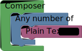

Basics Blocks
Compose
Compose is the main block where everything happens in it. You can't add or remove it, what you do must be placed inside the compose block, Quartet looks for blocks inside of the Compose Block. This also means that anything outside of the Compose block is being ignored.Comment
Just as in a textual programming language where you can put text that has no effect on the behavior of the program, Comment Block in Quartet provides the same functionality.Input Blocks
Plain Text
Plain Text block is to insert plain text. It encodes the special characters and places the entire text into a sequence group ((?: ) in wildcard format) hence the entire text is being treated safely as one group.
Example 1
The following code compiles to/Hello World\!/

Example 2
The following Quartet compiles to/(?:Hello World\!)*/.
Unsafe Wildcard
Unsafe Wildcard is used to inject wildcard grammar into the final Quartet. Quartet targets JavaScript's RegEx implementation which is a very standard implementation by the way, However other languages have some extra RegEx goodies. In order for you to have those goodies inside of the Quartet, you may use this unsafe block and add whatever text you want to the Quartet at any position.Example
ECMAScript (as even in the latest drafts) has no support for Look-behind thus as our strategy Quartet does not provide a block for look-behind too. However if targeting special RegEx engines that support lookbehind you can inject a wildcard like this that compiles to/(?<=ABC)/.
Encode Unicode
In order to use Unicode in your RegExes you can use this blocks. Characters inside of the block are being translated into safe Unicode inputs. So that you can use them safely. This also makes the final RegEx to be independent fromu flag.

Example
The following Quartet compiles to/\uD83D/.

Control Structures
One or more
One or more block matches one or more than one sequence of letters following by each other.
RegEx Specs
One or More is the Kleene plus which means in the wildcard format you'd write it as+
Example
The following Quartet compiles to wildcard/a+/ and matches one or more of the letter 'a' followed by each other. So "a", "aa", "aaaaaa" are all matched. In the string "abaa" however, It will match two substrings as "a" and "aa".
Any number of
Any number of block, matches any number of it's value. Just like "One or more" it matches one or more than one of a given value, but it also it matches "zero" number of the given value. That statement means the sequence can be optional.
RegEx Specs
Any number of is the Kleene star which means in the wildcard format you'd write it as*
Example
The following Quartet compiles to wildcard/ab*a/ and matches at least "aa" but also "aba", "abbbbba".
Maybe
Maybe makes it's value optional. So the value can either appear or not appear.
RegEx Specs
Maybe compiled to wildcard using the? operator.
Example 1
The following Quartet compiles to wildcard/ab?c/ and matches either "abc" or "ac".
Example 2
These two Quartets are equivalent to each other.
Options
The combination of One of Options and Option blocks makes it possible for you to define multiple possibilities in your code. Each time the Quartet reaches the One of options block one of it's options must happen. Remember that the Option block can only be used inside of the One of Options block and One of Options block can not contain anything but Option blocks. (This approach lets you create more sophisticated options with clear borders.)
RegEx Specs
"Any number of" is the Kleene star which means in the wildcard format you'd write it as*
Example
This Quartet finds different ways to say"Hello World" like "Howdy World" and so on...
Options
The combination of One of Options and Option blocks makes it possible for you to define multiple possibilities in your code. Each time the Quartet reaches the One of options block one of it's options must happen. Remember that the Option block can only be used inside of the One of Options block and One of Options block can not contain anything but Option blocks. (This approach lets you create more sophisticated options with clear borders.)
RegEx Specs
"Any number of" is the Kleene star which means in the wildcard format you'd write it as*
Example
This Quartet finds different ways to say"Hello World" like "Howdy World" and so on...